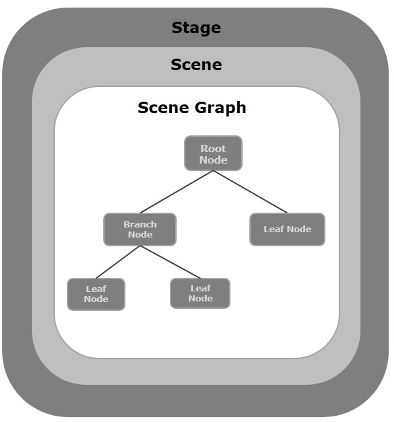

Getting Started with JavaFX
What is JavaFX?
JavaFX is a platform for creating desktop applications, as well as Internet applications that can run across a large variety of devices. JavaFX was created to replace Swing as the standard GUI library for Java SE.
Features of JavaFX
- FXML — It’s an an XML-based user interface markup language created by Oracle Corporation for defining the user interface of a JavaFX application.
- Scene Builder — Scene Builder is a visual layout tool that lets users quickly design JavaFX application user interfaces, without coding. Users can drag and drop UI components.
- Swing Compatibility — In a JavaFX apps, you can embed Swing content using the Swing Node class. And, you can update the existing Swing applications with JavaFX features like embedded web content and rich graphics media.
- CSS Styling — You can style your applications by using CSS classes.
Swing VS JavaFX
| Swing | JavaFX | |
|---|---|---|
| Events | Events in Swing are inconsistent. | Events in JavaFX are more though-out than their equivelents in Swing. |
| Control | Swing has a small set of controls. | JavaFX provides a wide variety of usable controls. |
| Animation | You must build your own timers and logic to perform simple animations in Swing. | JavaFX natively provides support for animations. You can easily create complex animations in little time. |
| Touch Support | Swing does not support touch screen usage. | JavaFX fully supports touch screen usage. |
| CSS Support | Swing does not support CSS. | JavaFX supports CSS. |
How Does JavaFX Work?
In general, a JavaFX application will have three major components namely Stage, Scene and Nodes as shown in the following diagram.
To learn more about JavaFX click here.